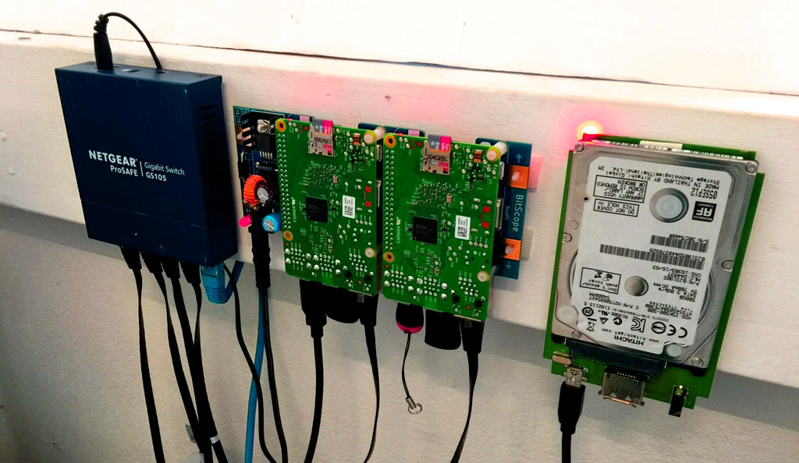
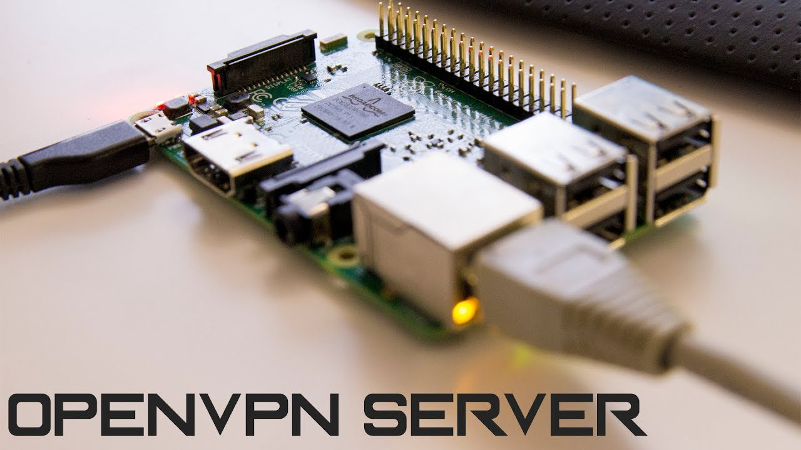
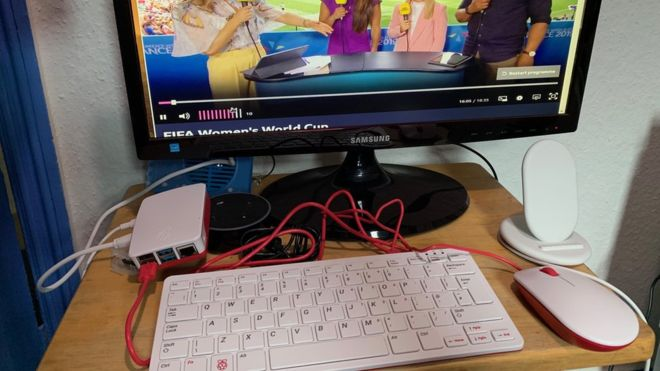

Il Rasperry PI ha molteplici utilizzi diversi che lo portano ad essere uno strumento molto versatile e utile in moltissime situazioni diverse. Di seguito un elenco di diversi tipi di utilizzi che si possono fare con Raspberry PI.
CASA SMART
la Smart Home, che consente la gestione e il controllo centralizzato di termosifoni, lampade, persiane, frigo, lavatrice e altri apparecchi, non solo aumenta la qualità della vita e il comfort a casa, ma contribuisce anche a ottenere un consumo energetico più efficiente. Grazie al suo prezzo vantaggioso, alla possibilità di connettersi a Internet e al suo status di sistema autonomo con un hardware eccellente, sempre più appassionati si servono di un Raspberry Pi per realizzare dei progetti simili per la propria casa. La base software necessaria è costituita da tool open source come openHAB o Home Assistant. Oppure può essere utilizzato in coppia con Arduino per realizzare una centrale smart Home per la vostra casa.
CONSOLE RETRO
il Raspberry PI può essere utilizzato come console retro per videogiochi datati,questo è uno degli utilizzi
più comuni per il Raspberry PI perchè è un rpogetto molto semplice da realizzare.
Tutto questo è possibile grazie al sistema operativo Retro PI che ci permette di emulare una console sul
nostro Raspberry.

SERVER CASALINGO
Molti utenti usano il Raspberry Pi come web server, tra cui rientrano ad esempio Apache,lighttpd o NGINX. Ma per gestire senza problemi siti web complessi e dinamici, le prestazioni del Raspberry Pi non bastano. Il piccolo computer è indicato maggiormente come ambiente di test locale per il sito, ma è possibile hostare anche pagine semplici, dove non si prevede un grande afflusso di visitatori 
SERVER VPN PERSONALIZZATO
Il Rasperry PI 4 può essere utilizzato per creare una nuova rete VPN casalinga personalizzata o server VPN personale. Programmandolo a dovere permetterà all'utente di navigare in completo anonimato,non solo ad un utente ma a molti dispositivi se viene configurato come server. Ovviamente tutte le utilità e i progetti riguardanti il Raspberry possono essere trovate su inernet e realizzate tramite i molteplici tutorial che troviamo in rete.
COMPUTER
Infine uno degli utiizzi più comuni ed efficaci del Raspberry PI è il personal computer. Effettivamente lo è a tutti gli effetti quindi basta installare un sistema operativo e collegarlo alle periferiche di output per visualizzare le immagini e il vostro Rasperry diventerà a tutti gli effetti un computer utilizzabile e funzionante.
